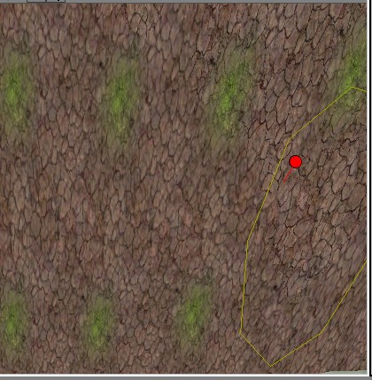

There is no spoon
Legacy:Terrain Texture Layer
A Terrain can contain a large number of texture layers. These allow different textures to be visible (and blended!) in different areas of a terrain. For example, a mountain might have snow on the tops; or a hillside might have gravel paths across it.
A texture layer therefore is really just two pieces of information: the name of the texture to display on the layer, and the name of the texture that is the alpha map for the layer's visibility. This second texture is what determines where the first texture is visible.
Layers have a stacking order, so newer layers cover up the older ones. You can change the order of layers after you've created them.
The list of layers is shown in two places:
- in the Terrain Editing Window, where you can edit how much and where each layer is visible. Note that the top layer in the list is the bottom-most in the rendering order (or the one rendered first if you prefer...)
- in the TerrainInfo's Actor Properties, where you can change the other settings.
Contents
Add a terrain layer[edit]
You'll need to start by Creating A Terrain :)
There are two ways to add a new layer to your terrain:
- use Terrain mode if you don't have a alpha map you wish to apply: it will create one for you which you can then edit with the Painting Terrain Tool.
- use the TerrainInfo's actor properties window if you have an existing texture for the alpha map: for example, one you've made in an image editing application and imported; or a duplicate of the alpha map of another layer. (Of course you can edit this alpha map too once the layer is made. But remember that this edits the alpha map texture, so if it's in use elsewhere, that will reflect the changes too.)
...in terrain mode[edit]
- In the Texture Browser, select a texture to be applied to the new layer. See the Texture Package list for suggestions. We'll call this the display texture.
- Click on the Terrain Mode button. The Terrain Mode window opens.

- In the 'Terrains' tab (halfway down the window), select from the list of TerrainInfos the one that represents the terrain you wish to add a layer to.
- Click on the 'Layers' tab. You might need to click on the first empty layer in the list to wake it up, but not always (and note that this part of the window is a bit buggy and doesn't always react the first time to clicks). Click the 'New...' button to the right. The New Layer window will open. You're about to create a new texture that will represent the alpha map for the layer – where the layer is visible and how it is tinted.
- Package
- Where to store the alpha map texture. MyLevel works here of course, to allows you to store the texture inside your map file. It's a good idea to place all the texture associated with your terrain in the same place.
- Group
- whatever you like. It's a good idea to use something meaningful like 'Terrain', which will keep the textures used by your terrain apart from everything else.
- Name
- whatever you want, but it's a good idea to use a name which reflects the layer you're going to make. Later on in the Terrain Mode window, this name is what will be the name of your layer. 'Layer1' will do, or 'RockLayer' or 'SandLayer' for example. If you're using several different terrains in your map, you might want thee name to reflect that too, eg 'SandDune-Pebbles', 'Hill-Path', 'BlueBase-Rocky'.
- Alpha Height & Alpha Width
- The height & width of the texture you're about to create. These values must match the dimensions of the heightmap for your terrain, unless you are using UScale & VScale to scale up. These are listed in the wrong order: the 'y' dimension before the 'x', but since non-square layers make UnrealEd crash, it doesn't really matter.
- Alpha fill
- colour to fill in the alpha map initially. Pick black to start with a totally invisible layer, white for a totally visible one.
- Color Fill
- For color fill, I believe this is the color that will 'Fade' in to the other layers when you paint the texture on. This must be a different color for each layer. (Example: A layer's color fill cannot be the same as another layers color fill. Ie. Red-Red is wrong and Red-Blue will work great ) ?????
Frankie C: Not a bad thought...but actually, the first texture layer color should be white, with other layer colors typically being black. The concept revolves around opacity (alpha channels, for those familiar), similar to making a displacement map in other applications (i.e., white is opaque, black is transparent, and the gray scale works as a varying level of transparency).
- UScale & VScale
- These determine how the display texture is scaled when it is applied to the terrain. It works exactly like the surface properties under the tab Pan/Rot/Scale. You can also apply a pan to the display texture in the layer properties once you've created it.
Finally, when you are satisfied with your new layer's settings, click OK.
There should now be a new layer in the list. It should be visible in UnrealEd immediately, though you might need to move around, or make a change to the terrain such as painting the height or the layer for UnrealEd to "wake up".
...in the TerrainInfo[edit]
In the TerrainInfo's Actor Properties, expand the TerrainInfo -> Layers array, and find the first empty array element. We'll refer to it as Layers[i] below.
- Set the resource property TerrainInfo -> Layers[i] -> AlphaMap = whatever alpha map you want to use.
- Set the resource property TerrainInfo -> Layers[i] -> Texture = the texture the layer should display. (for example snow, grass, rocks, etc. See Texture Package for suggestions of what to use)
- TerrainInfo -> Layers[i] -> UScale and VScale = however you want to scale the texture on the layer. 1 will do for now.
FreshMeat: Correct me if I'm wrong, but this is set by default, correct?
Editing the layer[edit]
Visibility[edit]
Now click on the layer and then click on the Painting Terrain Tool under the ' Terrain Editing Tools ' Menu. Now, on your terrain in your level. Use the paint controls (CTR+LMB to erase the texture and CTR-RMB to add the texture) on the area you want to change the texture to. depending on the ' Strength ' you set, the texture will ' fade ' in covering the older texture.
In the layer tab, you can right-click on a layer in the list, and do:
- Set alpha map from the current texture
- Set display texture from the current texture
- Toggle grid display for the layer
Properties[edit]
These are in the TerrainInfo -> Layers array.
- Texture AlphaMap
- the alpha map texture.
- float KFriction
- float KRestitution
- Rotator LayerRotation
- Material Texture
- the displayed texture
- ETexMapAxis TextureMapAxis
- float TextureRotation
- float UPan
- float UScale
- float VPan
- float VScale
Known bugs/nicks[edit]
When making the layers you can get a result like this:
 @inline@la_terrain_trouble_grid
As you can see in the grid image it just fills the middle of every quad. To solve this you have to make sure all the layers' alpha maps heightmap is the same size. This means that if your terrain is 256x256, the size of that layer's alpha has to be 256x256, or if it's 128x128, make sure the alpha of that texture layer is 128x128, etc...
Tarquin: I have no idea what these images are supposed to show. If nobody can explain, I'll delete them.
Anonymous: Whomever wrote this was trying to say that if you don't set the Alpha Height and Width to an appropriate number when creating a new layer, the fade out from the centre of the grid coordinate to the edge won't be what you're expecting. You can see that in the images above, where the grass texture only shows up as a dot in the middle. I could be wrong, but I'm pretty sure the best bet is to match the alpha size of the layer you're painting with to the same number as the terrain sector size. I think they also try to say that here, but not very clearly.
This means you can not have different sizes despite the obvious reason for having them (optimizing).
Anonymous: Yes this is very important and something that I just encountered..... You must set the alpha height of the the texture to the same as the terrain otherwise when you paint textures they will come up strangely spotty.
Comments[edit]
Could someone please clarify these steps with some screenshots? I'm totally confused. I tried to paint a texture on to my terrain, but I still only see the terrain in wireframe view. How do I know it's working?
Tarquin: How's that? I've cleaned up the instructions, going through it myself in the ed.
Make sure the texture is RGB8, it wont show up otherwise.
Bob_The_Beheader: I think that it would be a good idea to have some tips on exactly how to go about painting the terrain. I mean, what looks good asthetically, how much blending there should be, that sort of think. I think this may apply to other topics as well.
Anonymous: I have been following the tutorials to learn UEd3.0 recently and have encountered a problem painting texture layers. My textures paint onto the terrain in large blocks that are solid and not blended at all around the edges. It's almost like pixel editing with really huge regions. I was wondering if you could explain here or on the Painting_Terrain_Tool page how to go about making smoothly blended texture layers.
FreshMeat: I don't understand. How do you make sure the lower points have, for instance, a road like texture while the ones slightly higher than that would be dirt, and the ones higher than that would be grass? Specifically, how do you controll how high a surface has to be in order to be a road?
Still Freshmeat: hm.. are there 16 layers to match with each of the 16 colors in your grayscale heightmap?
Tarquin: You've got it all wrong. The height has nothing to do with the texture. Each layer texture has its OWN alpha map that shows how visible it is.
FreshMeat: Alright, I've followed this step by step... but ctrl-right clicking seems to not paint a thing onto my terrain at all... I think it has something to do with the alpha heightmap? Can someone please edit this page to explain how things actually work and what they do, rather than just saying "for this example let's do this and this"? I'm not following along on a tutorial. I'm learning how to use the editor, not this specific map. See, I had someone else make my greyscale so I could see one in action (and I suck at photo editing), so how do you determine what your alpha height and width should be?
Tarquin: painting terrain can be buggy. The size of your terrain alpha map (and it's NOT a height map, if you say that I can't be sure of what you mean) should match the size of the terrain height map (which IS a height map).
Fresh: So then Alpha height and width refer to the alpha map in 2 dimensions. The two dimensions of a flat texture, and not the three dimensions of the actuall wireframe you're trying to paint? That makes alot more sense. Hmmmm, no, that crashed my editor. someone please kindly further explain Alpha Height and Alpha Width.
Tarquin: Ok, it seems Uscale and VScale (edited – sorry, I got this wrong) have been defined differently in parts of this page. These variables affect how the visible texture is stretched on the terrain. There is nowhere to tell UnrealEd how to scale the texture layer alpha map – it figures that out automatically. Eg, if I add a 32x32 texture layer to a 128x128 terrain, there is no problem. it just means you won't have as fine a resolution for your layer.
FreshMeat: So if my texture is 512x512, that's what i should put into the alpha?
Tarquin: Er... hang on, I think I've messed up even more. Uscale and VScale stretch the visible texture. What texture are you talking about? AlphaHeight and AlphaWidth have nothing to do with the visible texture. They define the size of the visibility map you are about to create in the dialog box. If you already have a visibility map, then you're not going to give an AlphaHeight and AlphaWidth.
FreshMeat: someone apparently needs to go through and redo this page with consistant terms and clear instructions. I have no idea what a "visibility map" is. All I know is I have a wireframe view of my terrain from a heightmap, and I would sincerly love to texture it, but I am hopelessly confused at this section. My heightmap is 512x256. I have textures I wish to use, and I know how to import them. I would like to make some grass, and a dirt path. I have no idea how, and I begin to wonder if this is even possible. I can't even get textures ON my wireframe, let alone on my wireframe where I want them. If someone could kindly redo this page for someone who has essentially no idea what any of the terms actually mean, I would be eternaly grateful.
Tarquin: "A texture layer therefore really just two pieces of information: which texture is the alpha map for the layer's visibility, and which texture is displayed on the layer." What part of this don't you get? I've tried to make it clearer.
Tinn: Well, the lack of a verb before the colon makes the sentence itself a bit confusing...